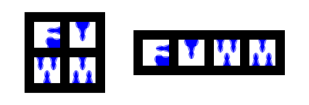

First, I want to state that I can easily create design variations (not just resized images, of course) of the logos below in order to match the size constraints in the competition rules. However, due to lack of time, I couldn't provide any variations in advance of the voting process.
Note that all logos were created in a vector graphics application, so I can provide them for example in SVG- or DXF-format. This also means that the colors and the background can be easily adjusted or set to be transparent (I choose a white background here for - among other things - better visibility).
I created two versions of this logo to show how it can be adjusted to different aspect ratios by reordering the window squares.

IIRC, this was my first design for an FVWM logo. The letters F, V, W, M are arranged in a geometric window like pattern.